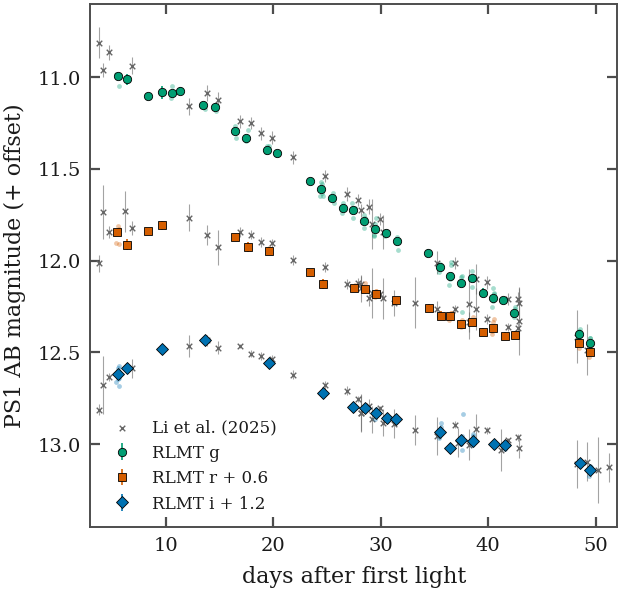
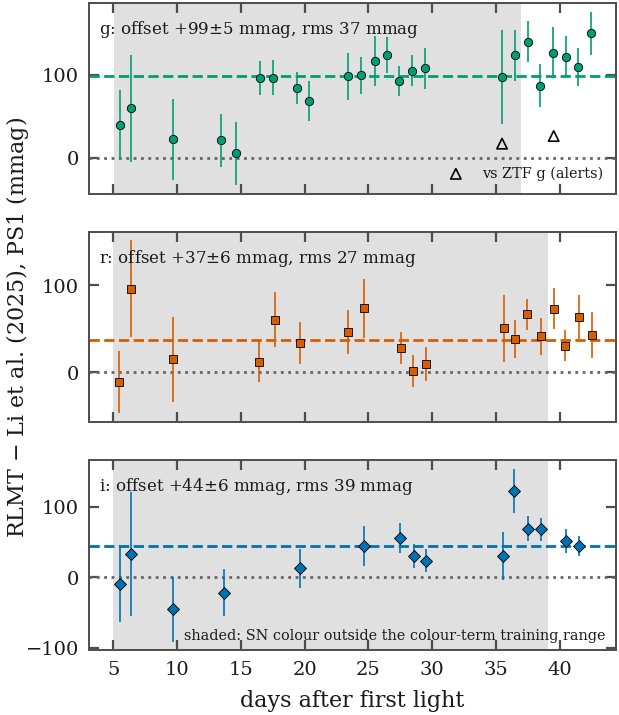
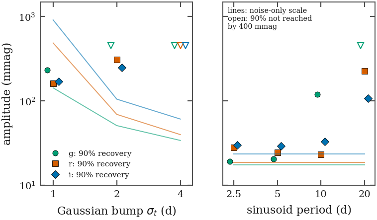
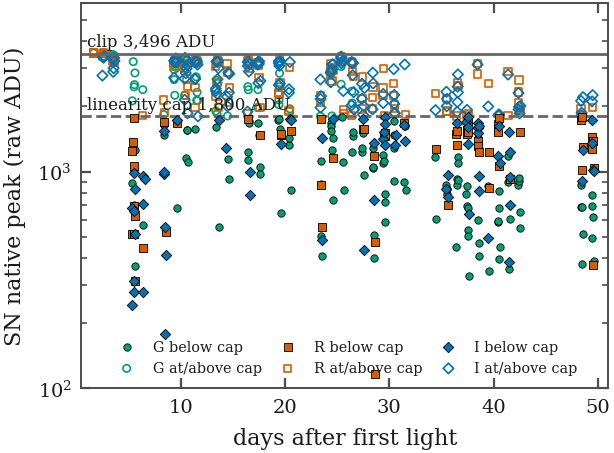

Generated 2026-10-04T23:21:18Z by macro_sn.report_sn from products/sn/sn2023ixf.sqlite (SN-PHOT v1.0 (2026-10-04)) and the manifest Gate 0 tables. Every number is a query.
Plan task SN-S4-resolve
Which broadband frames lacked a plate solution, and can each be solved?
| filter | epoch | header solved | status | WCS source | frames | mean REFCAT2 matched | mean rms (") | mean 5σ detections |
|---|---|---|---|---|---|---|---|---|
| G | campaign | 0 | failed | failed | 24 | — | — | 13 |
| G | campaign | 0 | measured | solved | 5 | 241 | 0.58 | 1097 |
| G | campaign | 0 | measured | solved-vote | 5 | 163 | 0.60 | 687 |
| G | campaign | 1 | failed | failed | 1 | — | — | 209595 |
| G | campaign | 1 | measured | header | 174 | 63 | 0.62 | 101 |
| I | campaign | 0 | failed | failed | 16 | — | — | 18 |
| I | campaign | 0 | measured | solved-vote | 2 | 19 | 0.66 | 16 |
| I | campaign | 1 | measured | header | 201 | 126 | 0.60 | 156 |
| I | campaign | 1 | measured | solved-vote | 1 | 17 | 0.62 | 26 |
| R | campaign | 0 | failed | failed | 16 | — | — | 13 |
| R | campaign | 0 | measured | solved | 4 | 331 | 0.59 | 1030 |
| R | campaign | 0 | measured | solved-vote | 5 | 108 | 0.64 | 313 |
| R | campaign | 1 | measured | header | 178 | 111 | 0.59 | 147 |
| g | template_post | 0 | failed | failed | 1 | — | — | 5639 |
| g | template_post | 0 | measured | solved | 15 | 183 | 0.41 | 246 |
| g | template_post | 1 | measured | header | 37 | 170 | 0.42 | 1317 |
| i | template_post | 1 | measured | header | 37 | 161 | 0.46 | 1476 |
| r | template_post | 0 | measured | solved | 15 | 237 | 0.40 | 313 |
| r | template_post | 1 | measured | header | 37 | 199 | 0.45 | 1406 |
| G | template_pre | 1 | failed | failed | 3 | — | — | 703 |
| G | template_pre | 1 | measured | header | 5 | 17 | 0.76 | 737 |
| R | template_pre | 1 | measured | header | 8 | 288 | 0.56 | 1091 |
Plan task SN-S1-filter-crosswalk
Which PS1 band does each filter code measure, and do the MaxIm campaign codes and the pyscope template codes agree?
| epoch | camera | code | PS1 band | colour term (g−i) | ± | tie rms | stars | identified |
|---|---|---|---|---|---|---|---|---|
| campaign | AC4040 | 1 | g | -0.747 | 0.008 | 0.055 | 54 | 0 |
| campaign | AC4040 | 1 | i | +0.253 | 0.008 | 0.055 | 54 | 0 |
| campaign | AC4040 | 1 | r | -0.075 | 0.007 | 0.061 | 55 | 1 |
| campaign | AC4040 | G | g | +0.103 | 0.020 | 0.053 | 26 | 1 |
| campaign | AC4040 | G | i | +1.103 | 0.020 | 0.053 | 26 | 0 |
| campaign | AC4040 | G | r | +0.759 | 0.020 | 0.053 | 26 | 0 |
| campaign | AC4040 | H | g | -0.756 | 0.006 | 0.060 | 54 | 0 |
| campaign | AC4040 | H | i | +0.244 | 0.006 | 0.060 | 54 | 0 |
| campaign | AC4040 | H | r | -0.226 | 0.006 | 0.054 | 54 | 1 |
| campaign | AC4040 | I | g | -1.009 | 0.005 | 0.053 | 59 | 0 |
| campaign | AC4040 | I | i | -0.009 | 0.005 | 0.053 | 59 | 1 |
| campaign | AC4040 | I | r | -0.517 | 0.005 | 0.100 | 59 | 0 |
| campaign | AC4040 | O | g | +0.009 | 0.018 | 0.070 | 31 | 1 |
| campaign | AC4040 | O | i | +1.009 | 0.018 | 0.070 | 31 | 0 |
| campaign | AC4040 | O | r | +0.673 | 0.018 | 0.072 | 31 | 0 |
| campaign | AC4040 | R | g | -0.619 | 0.008 | 0.058 | 51 | 0 |
| campaign | AC4040 | R | i | +0.381 | 0.008 | 0.058 | 51 | 0 |
| campaign | AC4040 | R | r | +0.037 | 0.007 | 0.060 | 52 | 1 |
| template_post | QHY600 | g | g | -0.053 | 0.005 | 0.209 | 70 | 1 |
| template_post | QHY600 | g | i | +0.947 | 0.005 | 0.209 | 70 | 0 |
| template_post | QHY600 | g | r | +0.364 | 0.005 | 0.244 | 70 | 0 |
| template_post | QHY600 | ha | g | -0.785 | 0.007 | 0.094 | 41 | 0 |
| template_post | QHY600 | ha | i | +0.215 | 0.007 | 0.094 | 41 | 1 |
| template_post | QHY600 | ha | r | -0.300 | 0.007 | 0.070 | 40 | 0 |
| template_post | QHY600 | i | g | -1.022 | 0.005 | 0.079 | 79 | 0 |
| template_post | QHY600 | i | i | -0.022 | 0.005 | 0.079 | 79 | 1 |
| template_post | QHY600 | i | r | -0.597 | 0.005 | 0.128 | 79 | 0 |
| template_post | QHY600 | r | g | -0.545 | 0.005 | 0.115 | 76 | 0 |
| template_post | QHY600 | r | i | +0.455 | 0.005 | 0.115 | 76 | 0 |
| template_post | QHY600 | r | r | -0.123 | 0.005 | 0.141 | 76 | 1 |
| template_post | iKon | g | g | +0.122 | 0.005 | 0.158 | 63 | 1 |
| template_post | iKon | g | i | +1.122 | 0.005 | 0.158 | 63 | 0 |
| template_post | iKon | g | r | +0.581 | 0.005 | 0.223 | 63 | 0 |
| template_post | iKon | r | g | -0.543 | 0.005 | 0.112 | 65 | 0 |
| template_post | iKon | r | i | +0.457 | 0.005 | 0.112 | 65 | 0 |
| template_post | iKon | r | r | -0.123 | 0.005 | 0.138 | 65 | 1 |
| template_pre | AC4040 | H | g | -0.756 | 0.006 | 0.070 | 57 | 0 |
| template_pre | AC4040 | H | i | +0.244 | 0.006 | 0.070 | 57 | 0 |
| template_pre | AC4040 | H | r | -0.208 | 0.006 | 0.050 | 56 | 1 |
| template_pre | AC4040 | O | g | +0.276 | 0.011 | 0.056 | 37 | 1 |
| template_pre | AC4040 | O | i | +1.276 | 0.011 | 0.056 | 37 | 0 |
| template_pre | AC4040 | O | r | +0.944 | 0.011 | 0.060 | 37 | 0 |
Plan task SN-S4-ensemble-cal
Is the error model honest on stars that took no part in the fit?
| epoch | camera | code | frames used | ensemble | check | colour term | k″ (colour×X) | floor | tie rms | check χ²ν | dof | verdict (rule 1) |
|---|---|---|---|---|---|---|---|---|---|---|---|---|
| campaign | AC4040 | G | 158/184 | 26 | 15 | +0.105 | +0.000 | 0.0387 | 0.053 | 0.99 | 1066 | pass |
| campaign | AC4040 | R | 166/185 | 52 | 20 | +0.039 | -0.009 | 0.0276 | 0.060 | 1.04 | 2072 | pass |
| campaign | AC4040 | I | 184/204 | 59 | 25 | -0.003 | -0.003 | 0.0225 | 0.046 | 1.04 | 2972 | pass |
| campaign | AC4040 | H | 99/102 | 54 | 21 | -0.226 | -0.006 | 0.0329 | 0.054 | 1.02 | 1369 | pass |
| campaign | AC4040 | O | 115/134 | 31 | 10 | +0.008 | +0.036 | 0.0437 | 0.070 | 0.90 | 948 | pass |
| campaign | AC4040 | 1 | 106/113 | 55 | 21 | +0.257 | -0.003 | 0.0348 | 0.055 | 1.09 | 1492 | pass |
| template_pre | AC4040 | H | 8/8 | 59 | 15 | -0.201 | -0.068 | 0.0160 | 0.051 | 1.40 | 94 | pass |
| template_pre | AC4040 | O | 8/8 | 38 | 9 | +0.264 | -0.376 | 0.0170 | 0.056 | 1.69 | 55 | pass |
| template_post | QHY600 | g | 33/37 | 70 | 25 | -0.055 | +1.206 | 0.1570 | 0.209 | 0.34 | 475 | DEFECT (errors overestimated) |
| template_post | QHY600 | r | 24/29 | 76 | 27 | -0.110 | +0.225 | 0.0139 | 0.142 | 1.13 | 399 | pass |
| template_post | QHY600 | i | 30/37 | 80 | 26 | -0.025 | +0.185 | 0.0406 | 0.079 | 0.94 | 557 | pass |
| template_post | QHY600 | ha | 16/17 | 41 | 11 | -0.288 | +0.309 | 0.0166 | 0.071 | 1.63 | 117 | pass |
| template_post | iKon | g | 15/15 | 63 | 25 | +0.133 | -1.964 | 0.0025 | 0.158 | 1.39 | 350 | pass |
| template_post | iKon | r | 15/15 | 65 | 26 | -0.111 | -0.002 | 0.0033 | 0.139 | 1.35 | 362 | pass |
Scintillation scale (pooled over G, R, I): C = 2.78 × Young (1967).
| code | exp (s) | check points | rms obs | rms model | normalised rms | scint share of variance |
|---|---|---|---|---|---|---|
| 1 | 32.0 | 79 | 0.0863 | 0.0841 | 1.156 | 0.001 |
| 1 | 64.0 | 82 | 0.0620 | 0.0558 | 1.147 | 0.002 |
| 1 | 128.0 | 1352 | 0.0530 | 0.0473 | 1.031 | 0.002 |
| G | 0.5 | 34 | 0.1102 | 0.1092 | 1.039 | 0.103 |
| G | 2.0 | 979 | 0.0810 | 0.0582 | 0.989 | 0.077 |
| G | 8.0 | 58 | 0.1256 | 0.1048 | 1.127 | 0.007 |
| G | 32.0 | 10 | 0.0749 | 0.0571 | 1.143 | 0.002 |
| H | 32.0 | 108 | 0.0823 | 0.0808 | 1.039 | 0.001 |
| H | 64.0 | 73 | 0.0523 | 0.0538 | 1.066 | 0.003 |
| H | 128.0 | 1209 | 0.0510 | 0.0468 | 1.004 | 0.003 |
| I | 0.5 | 47 | 0.1575 | 0.1434 | 1.101 | 0.049 |
| I | 2.0 | 154 | 0.0886 | 0.0867 | 1.037 | 0.034 |
| I | 4.0 | 49 | 0.0749 | 0.0569 | 1.529 | 0.015 |
| I | 8.0 | 2642 | 0.0428 | 0.0417 | 0.999 | 0.052 |
| I | 16.0 | 64 | 0.0322 | 0.0313 | 1.109 | 0.043 |
| I | 32.0 | 41 | 0.0343 | 0.0271 | 1.295 | 0.031 |
| O | 32.0 | 32 | 0.0569 | 0.0643 | 0.811 | 0.002 |
| O | 64.0 | 889 | 0.0497 | 0.0539 | 0.909 | 0.003 |
| O | 128.0 | 37 | 0.0822 | 0.0485 | 1.720 | 0.002 |
| R | 0.5 | 58 | 0.1601 | 0.1254 | 1.102 | 0.068 |
| R | 2.0 | 77 | 0.0651 | 0.0611 | 1.007 | 0.065 |
| R | 4.0 | 1875 | 0.0475 | 0.0451 | 1.001 | 0.079 |
| R | 8.0 | 52 | 0.0494 | 0.0471 | 1.306 | 0.038 |
| R | 32.0 | 30 | 0.0446 | 0.0323 | 1.311 | 0.016 |
Plan task SN-S5-template-table
Which template epochs are usable, on which camera, mechanical epoch, FWHM and focus?
| night | camera | filter | frames | exp (s) | mech epoch | rotation (°) | scale ("/px) | FWHM (") | FOCPOS | focus offset | in focus |
|---|---|---|---|---|---|---|---|---|---|---|---|
| 2023-05-04 | AC4040 | G | 8 | 256 | AC4040:2023-02-06 | 179.1 | 0.539 | — | 17386 | +312 | 0 |
| 2023-05-04 | AC4040 | H | 8 | 256 | AC4040:2023-02-06 | 179.1 | 0.539 | 2.42 | 17666 | +435 | 1 |
| 2023-05-04 | AC4040 | O | 8 | 256 | AC4040:2023-02-06 | 179.1 | 0.539 | 2.64 | 17670 | +314 | 0 |
| 2023-05-04 | AC4040 | R | 8 | 256 | AC4040:2023-02-06 | 179.1 | 0.539 | 4.34 | 17328 | +155 | 0 |
| 2023-05-04 | AC4040 | X | 8 | 256 | AC4040:2023-02-06 | 179.1 | 0.539 | 3.97 | 17483 | +266 | 0 |
| 2023-11-27 | AC4040 | L | 2 | 64 | AC4040:2023-02-06 | 179.1 | 0.539 | 4.21 | 17123 | -56 | 0 |
| 2024-03-11 | AC4040 | L | 1 | 32 | AC4040:2023-02-06 | 179.1 | 0.539 | 2.65 | 17094 | -85 | 1 |
| 2024-05-18 | iKon | g | 15 | 90 | iKon:2024-05-12 | 177.9 | 0.809 | 2.90 | 3434 | -301 | 1 |
| 2024-05-18 | iKon | r | 15 | 90 | iKon:2024-05-12 | 177.9 | 0.809 | 2.96 | 3435 | -368 | 1 |
| 2026-03-21 | QHY600 | g | 15 | 30 | QHY600:2026-03-21 | 3.2 | 0.451 | 2.42 | 8304 | +104 | 1 |
| 2026-03-21 | QHY600 | ha | 15 | 90 | QHY600:2026-03-21 | 3.2 | — | — | 8304 | +116 | 0 |
| 2026-03-21 | QHY600 | i | 15 | 30 | QHY600:2026-03-21 | 3.2 | 0.451 | 1.87 | 8304 | +39 | 1 |
| 2026-03-21 | QHY600 | r | 15 | 30 | QHY600:2026-03-21 | 3.2 | 0.451 | 2.17 | 8304 | +150 | 1 |
| 2026-03-22 | QHY600 | g | 20 | 30 | QHY600:2026-03-22 | 179.9 | 0.451 | 3.21 | 8591 | +391 | 0 |
| 2026-03-22 | QHY600 | ha | 20 | 90 | QHY600:2026-03-22 | 179.9 | 0.451 | 2.91 | 8591 | +403 | 1 |
| 2026-03-22 | QHY600 | i | 20 | 30 | QHY600:2026-03-22 | 179.9 | 0.451 | 2.73 | 8591 | +326 | 0 |
| 2026-03-22 | QHY600 | r | 20 | 30 | QHY600:2026-03-22 | 179.9 | 0.451 | 2.84 | 8591 | +437 | 0 |
| 2026-04-01 | QHY600 | g | 3 | 190 | QHY600:2026-04-01 | 179.6 | 0.451 | 2.20 | 8061 | -140 | 1 |
| 2026-04-01 | QHY600 | i | 2 | 175 | QHY600:2026-04-01 | 179.6 | 0.451 | 2.07 | 8046 | -219 | 1 |
| 2026-04-01 | QHY600 | r | 2 | 200 | QHY600:2026-04-01 | 179.6 | 0.451 | 1.96 | 8046 | -108 | 1 |
Plan task SN-S5-photometry
Does the aperture (bright) regime agree with the template-subtracted (faint) regime, and is the scintillation term matched by the check-star rms?
| code | frames | mean aperture − subtracted (mag) | min | max |
|---|---|---|---|---|
| G | 112 | +0.0020 | -0.0069 | +0.0074 |
| I | 55 | +0.0032 | -0.0004 | +0.0220 |
| R | 54 | +0.0019 | -0.0064 | +0.0051 |
| code | SN floor (mag) | frames | nights | star floor |
|---|---|---|---|---|
| G | 0.0127 | 107 | 32 | 0.0387 |
| R | 0.0120 | 41 | 24 | 0.0276 |
| I | 0.0163 | 48 | 19 | 0.0225 |
| 1 | 0.0154 | 12 | 8 | 0.0348 |
| code | usable frames | campaign frames | nights |
|---|---|---|---|
| 1 | 15 | 124 | 8 |
| G | 112 | 209 | 32 |
| H | 8 | 112 | 4 |
| I | 55 | 220 | 19 |
| O | 21 | 172 | 17 |
| R | 54 | 203 | 24 |

Plan task SN-S5b-peak-epoch
Is the clean start (+5.4 d) at or after optical maximum?
| quantity | value | source |
|---|---|---|
| peak_V_Teja | 5 | Teja et al. 2023, ApJL 954, L12 |
| peak_V_Li | 6 | Li et al. 2025, A&A 703, A168 |
| first_clean_G | 5.3725 | this work (sn_phot) |
| first_clean_I | 5.37347 | this work (sn_phot) |
| first_clean_R | 5.37172 | this work (sn_phot) |
| t0_mjd_li25 | 60082.8 | Li et al. 2025, A&A 703, A168 |
| f_halpha_max | 3.18e-13 | Bostroem et al. 2023, ApJL 956, L5 |
| f_halpha_max_phase | 1.36 | Bostroem et al. 2023, ApJL 956, L5 |
| f_halpha_fade | 3 | Smith et al. 2023, ApJ 956, 46 |
| ps1_r_weff | 1252.41 | SVO FPS PAN-STARRS/PS1.r (Tonry et al. 2012) |
| band | t_peak (d) | 16% | 84% | points |
|---|---|---|---|---|
| g | 5.36 | 4.95 | 5.76 | 4 |
| r | 5.90 | 5.72 | 6.21 | 5 |
| i | 14.34 | 12.07 | 15.27 | 6 |
| V | — | 7.92 | 14.31 | 4 |
Plan task SN-S6-0-excess-gate
Would the flash-phase (H − '[S II]') colour see the Hα excess published spectroscopy predicts?
| epoch (d) | W (Å) | excess (upper) | Δm upper | Δm central | σ_rep | σ_loc | σ_NB | passes 3σ_NB | passes 3σ_rep |
|---|---|---|---|---|---|---|---|---|---|
| 2.5 | 50 | 0.153 | 0.154 | 0.123 | 0.020 | 0.327 | 0.328 | 0 | 1 |
| 2.5 | 65 | 0.117 | 0.121 | 0.096 | 0.020 | 0.327 | 0.328 | 0 | 1 |
| 2.5 | 80 | 0.095 | 0.099 | 0.079 | 0.020 | 0.327 | 0.328 | 0 | 1 |
| 2.5 | 53 | 0.144 | 0.146 | 0.116 | 0.020 | 0.327 | 0.328 | 0 | 1 |
| 5.4 | 50 | 0.075 | 0.079 | 0.036 | 0.020 | 0.327 | 0.328 | 0 | 1 |
| 5.4 | 65 | 0.058 | 0.061 | 0.028 | 0.020 | 0.327 | 0.328 | 0 | 1 |
| 5.4 | 80 | 0.047 | 0.050 | 0.023 | 0.020 | 0.327 | 0.328 | 0 | 0 |
| 5.4 | 53 | 0.071 | 0.074 | 0.034 | 0.020 | 0.327 | 0.328 | 0 | 1 |
| 6.4 | 50 | 0.072 | 0.076 | 0.029 | 0.020 | 0.302 | 0.302 | 0 | 1 |
| 6.4 | 65 | 0.055 | 0.059 | 0.022 | 0.020 | 0.302 | 0.302 | 0 | 0 |
| 6.4 | 80 | 0.045 | 0.048 | 0.018 | 0.020 | 0.302 | 0.302 | 0 | 0 |
| 6.4 | 53 | 0.068 | 0.071 | 0.027 | 0.020 | 0.302 | 0.302 | 0 | 1 |
| code | W from ZP ratio (Å) | MAD | nights |
|---|---|---|---|
| H | 53 | 3 | 26 |
| 1 | 41 | 2 | 26 |
Plan task SN-S7b-residuals-table
How do the RLMT nightly magnitudes compare with Li et al. (2025)?
| code | subset | N | offset | ± | rms | χ²ν | dof | colour range lo | hi |
|---|---|---|---|---|---|---|---|---|---|
| G | all | 24 | +0.099 | 0.005 | 0.037 | 1.33 | 23 | 0.31 | 0.93 |
| G | colour inside training range | 6 | +0.122 | 0.010 | 0.020 | 0.75 | 5 | 0.31 | 0.93 |
| G | colour outside training range | 18 | +0.091 | 0.006 | 0.036 | 1.19 | 17 | 0.31 | 0.93 |
| G | all, published SDSS mags untransformed | 24 | +0.066 | 0.005 | 0.024 | 0.70 | 23 | 0.31 | 0.93 |
| R | all | 19 | +0.037 | 0.006 | 0.027 | 1.03 | 18 | 0.33 | 1.60 |
| R | colour inside training range | 5 | +0.054 | 0.010 | 0.016 | 0.78 | 4 | 0.33 | 1.60 |
| R | colour outside training range | 14 | +0.028 | 0.007 | 0.028 | 0.81 | 13 | 0.33 | 1.60 |
| R | all, published SDSS mags untransformed | 19 | +0.035 | 0.006 | 0.027 | 0.98 | 18 | 0.33 | 1.60 |
| I | all | 15 | +0.044 | 0.006 | 0.039 | 1.66 | 14 | 0.33 | 2.00 |
| I | colour inside training range | 3 | +0.053 | 0.009 | 0.010 | 0.57 | 2 | 0.33 | 2.00 |
| I | colour outside training range | 12 | +0.038 | 0.007 | 0.042 | 1.87 | 11 | 0.33 | 2.00 |
| I | all, published SDSS mags untransformed | 15 | +0.044 | 0.006 | 0.037 | 1.48 | 14 | 0.33 | 2.00 |
| phase (d) | ZTF g | RLMT g | RLMT − ZTF |
|---|---|---|---|
| 35.47 | 12.019 | 12.035 | +0.017 |
| 39.52 | 12.148 | 12.174 | +0.026 |

Plan task SN-S8-variability-limits
What night-to-night variability could the campaign have seen?
| code | nights | knots (d) | χ²ν about trend | bump SNR | threshold | FAP | sine Δχ² | threshold | FAP |
|---|---|---|---|---|---|---|---|---|---|
| G | 32 | 4 | 1.99 | 3.40 | 4.31 | 0.050 | 9.3 | 17.6 | 0.066 |
| R | 24 | 8 | 1.33 | 2.37 | 3.40 | 0.152 | 6.3 | 12.9 | 0.076 |
| I | 19 | 12 | 1.25 | 1.77 | 4.21 | 0.584 | 4.4 | 17.0 | 0.252 |
| code | shape | σ_t or P (d) | A90 (mag) | noise-only scale | signed bias | A50 all | completeness |
|---|---|---|---|---|---|---|---|
| G | bump | 1 | 0.232 | 0.143 | -0.0006 | 0.113 | 0.87 |
| G | bump | 2 | — | 0.051 | — | 0.203 | 0.71 |
| G | bump | 4 | — | 0.034 | — | — | 0.00 |
| G | sine | 2.5 | 0.019 | 0.018 | -0.0004 | 0.015 | 1.00 |
| G | sine | 5 | 0.021 | 0.018 | +0.0004 | 0.015 | 1.00 |
| G | sine | 10 | 0.120 | 0.018 | +0.0112 | 0.040 | 1.00 |
| G | sine | 20 | — | 0.018 | — | — | 0.00 |
| R | bump | 1 | 0.162 | 0.487 | -0.0000 | 0.113 | 0.87 |
| R | bump | 2 | 0.311 | 0.069 | -0.0001 | 0.095 | 0.95 |
| R | bump | 4 | — | 0.040 | — | 0.243 | 0.75 |
| R | sine | 2.5 | 0.028 | 0.019 | +0.0015 | 0.011 | 1.00 |
| R | sine | 5 | 0.024 | 0.019 | +0.0009 | 0.016 | 1.00 |
| R | sine | 10 | 0.023 | 0.019 | +0.0002 | 0.018 | 1.00 |
| R | sine | 20 | 0.227 | 0.019 | +0.0475 | 0.088 | 0.97 |
| I | bump | 1 | 0.171 | 0.914 | -0.0000 | 0.158 | 0.72 |
| I | bump | 2 | 0.248 | 0.105 | -0.0000 | 0.137 | 1.00 |
| I | bump | 4 | — | 0.061 | — | 0.195 | 0.85 |
| I | sine | 2.5 | 0.030 | 0.023 | +0.0017 | 0.018 | 1.00 |
| I | sine | 5 | 0.029 | 0.023 | +0.0017 | 0.020 | 1.00 |
| I | sine | 10 | 0.033 | 0.023 | -0.0001 | 0.024 | 1.00 |
| I | sine | 20 | 0.107 | 0.023 | +0.0109 | 0.036 | 1.00 |

Plan task SN-S9-late-time
What do the post-fade stacks allow at the SN position?
| epoch | camera | code | frames | ZP | ± | SN SNR | SN mag | 5σ limit | 90% recovery | recovery / note |
|---|---|---|---|---|---|---|---|---|---|---|
| +366 d | iKon | g | 15 | — | — | — | — | — | — | template PSF unmeasurable (defocused pre-explosion G); no subtraction |
| +366 d | iKon | r | 15 | 27.45 | 0.09 | 8.6 | 17.28 | 17.87 | 17.64 | {"3.0": 0.035, "4.0": 0.1, "5.0": 0.52, "6.0": 0.88, "7.0": 0.985, "8.0": 0.99, "10.0": 1.0} |
| +1035 d | QHY600 | g | 14 | — | — | — | — | — | — | template PSF unmeasurable (defocused pre-explosion G); no subtraction |
| +1035 d | QHY600 | r | 35 | 26.94 | 0.09 | 1.0 | 20.14 | 18.41 | 18.14 | {"3.0": 0.045, "4.0": 0.195, "5.0": 0.545, "6.0": 0.845, "7.0": 0.98, "8.0": 0.99, "10.0": 1.0} |
| +1045 d | QHY600 | g | 3 | — | — | — | — | — | — | template PSF unmeasurable (defocused pre-explosion G); no subtraction |
| +1045 d | QHY600 | r | 2 | 27.49 | 0.08 | 1.1 | 19.76 | 18.07 | 17.78 | {"3.0": 0.05, "4.0": 0.24, "5.0": 0.59, "6.0": 0.83, "7.0": 0.96, "8.0": 1.0, "10.0": 1.0} |
Plan task SN-G0-rerun
How many broadband frames survive the measured linearity cap?
| code | frames | clean | bounded | usable | rejected | undetermined | S2c dispersed | outside science tree |
|---|---|---|---|---|---|---|---|---|
| G | 209 | 122 | 27 | 149 | 52 | 6 | 1 | 1 |
| I | 220 | 72 | 17 | 89 | 130 | 1 | 0 | 0 |
| R | 203 | 61 | 21 | 82 | 116 | 4 | 0 | 1 |
